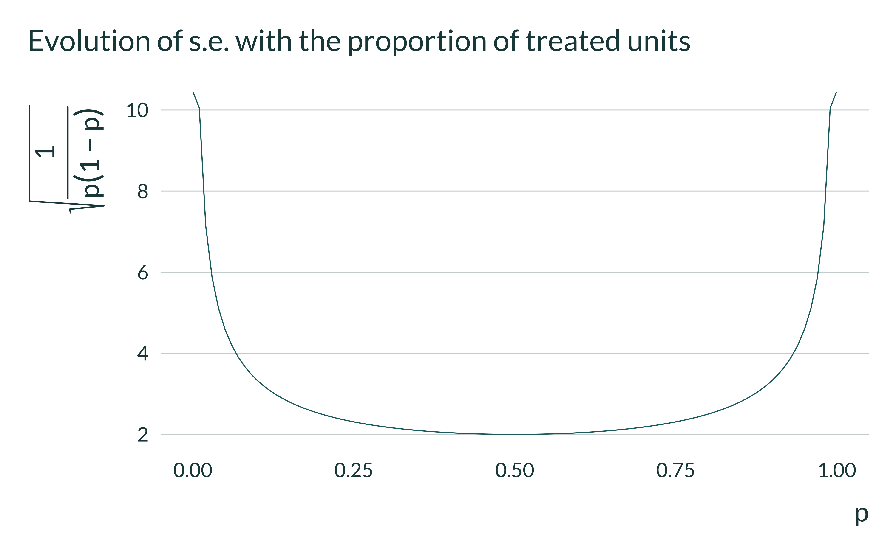
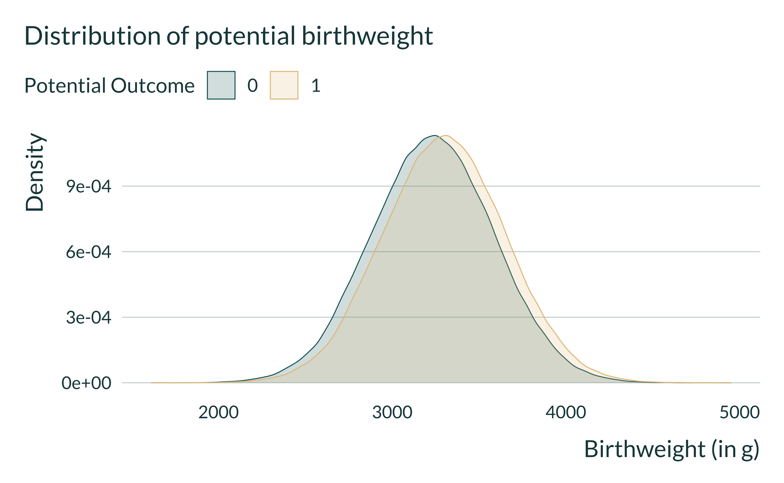
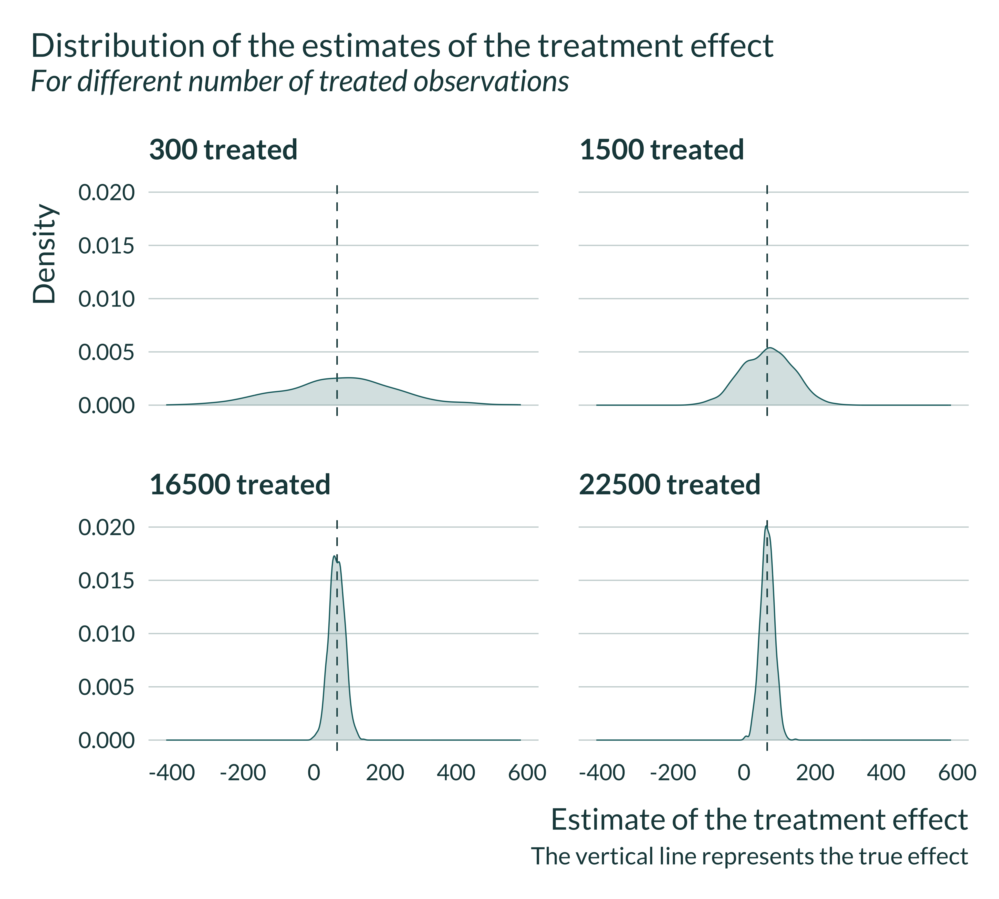
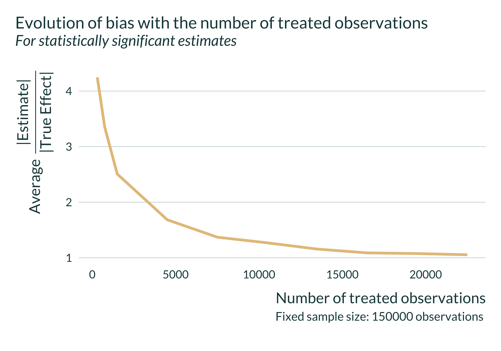

In this document, I run a simulation exercise to illustrate how using a exogenous shocks to avoid confounders may lead to a loss in power and inflated effect sizes. To make these simulations realistic, I emulate a typical study estimating the impact of air pollution reduction shocks on birthweight of newborn babies.
In the case of studies using exogenous shocks, a confounding / exaggeration trade-off is mediated by the number of (un)treated observations. In some settings, while the number of observations is large, the number of events might be limited. Pinpointing exogenous shocks is never easy and we are sometimes only able to find a limited number of occurrences of this shock or shocks affecting a small portion of the population. More precisely, the number of observations with a non-null treatment status might be small (or conversely the number of non-treated units might be small). In this instance, the variation available to identify the treatment is limited, possibly leading power to be low and exaggeration issues to arise.
The number of treated observations can be decomposed into two parts: the total number of observations times the proportion of observations in the treated group. Of course, if one reduces the total sample size, precision and thus statistical power will decrease. At a fixed total sample size and as commonly discussed in the Randomized Control Trial literature, statistical power is maximized when the proportion of treated observations is equal to the proportion of untreated ones. If we consider a fixed number of observations, decreasing the proportion of treated observations below 0.5 will decrease precision and power. The intuition for this relationship can be given by studying the simple formula for the standard error of the difference between the mean of the outcome for the control and treatment groups. It does not represent the actual standard error of the DiD estimator but can be useful to get an intuition for this trade-off. The formula is the following:
\[se_{\bar{y_T} - \bar{y_c}} = \sqrt{\dfrac{\sigma_T^2}{n_T} + \dfrac{\sigma_C^2}{n_C}}\] where \(n_T\) and \(n_C\) are the number of observation in the treated group and the control group respectively and \(\sigma_T\) and \(\sigma_C\) the standard deviations of the outcome in the treated group and the control group respectively. In many cases, we can assume that \(\sigma_T = \sigma_C = \sigma\). Under this assumption we have:
\[se_{\bar{y_T} - \bar{y_c}} = \dfrac{\sigma}{\sqrt{n}} \times \sqrt{\dfrac{1}{p_T(1-p_T)}}\] where \(n\) is the total number of observations (\(n = n_T + n_C\)) and \(p_T\) the proportion of treated observations.
From this simple formula it is obvious that the standard error of interest increases when \(n\) decreases and that, for \(n\) constant, it is minimized when the proportion of treated is 0.5. Since statistical power is a decreasing function of the variance of an estimator, it will decrease when the proportion of treated diverges from 0.5 and has an infinity limit in 0 and 1, leading to extremely large standard errors when the proportion of treated units is close to 0 or 1. Plotting the function \(x \mapsto \sqrt{\dfrac{1}{x \times(1 - x)}}\) illustrates this:
ggplot() +
geom_function(fun = \(x) 1/sqrt(x*(1-x))) +
labs(
title = "Evolution of s.e. with the proportion of treated units",
x = "p",
y = expression(sqrt(frac(1, p(1-p))))
)
The issue caused by a limited number of treated or control observations does not only affect event studies and DiD but is particularly salient in this case.
For readability and to illustrate this loss in power, let’s consider an example setting. For this illustration we could use a large variety of Data Genereting Processes (DGP), both in terms of distribution of the variables and of relations between them. I narrow this down to an example setting, considering an analysis of health impacts of air pollution. More precisely, I simulate and analyze the impacts of air pollution reduction in birthweights. Air pollution might vary with other variables that may also affect birthweight (for instance economic activity). Some of these variables might be unobserved and bias estimates of a simple regression of birthweight on pollution levels. A strategy to avoid such issues is to consider exogenous shocks to air pollution such as plant closures, plant openings, creation of a low emission zone or an urban toll, strikes, etc.
Although I consider an example setting for clarity, this confounding / exaggeration trade-off mediated by a number of treated observations arises in other settings.
To simplify, I make the assumptions described below. Of course these assumptions are arbitrary and I invite interested readers to play around with them.
Many studies in the literature, such as Currie et al. (2015) and Lavaine and Neidell (2017) for instance, aggregate observations to build a panel. I follow this approach and look at the evolution of birthweights in zip codes in time.
For clarity in the explanations, let’s assume that the exogenous shock considered is a permanent plant closure and that this reduces air pollution level. One can also think of it as any permanent exogenous change in air pollution levels. Here, I only estimate a reduced form model and am therefore not interested in modeling the effect of the plant closure on pollution levels. I consider that the plant closure leads to some air pollution reduction and want to estimate the effect of this closure on birth-weight.
For each time period, a zip code is either treated (plant closed) or not treated. Over the whole period, some zip codes experience a plant closure, others do not, either because they do not have a plant that affect their air pollution levels or because their plant did not close.
I consider that the average birthweight in zip code \(z\) at time period \(t\), \(w_{zt}\), depends on a zip code fixed-effect \(\zeta_z\), a time fixed-effect \(\tau_t\) and the treatment status \(T_i\), ie whether a plant is closed in this period or not. For now, I do not simulate omitted variable biases as I consider that the shocks are truly exogenous. Thus, birthweight is defined as follows:
\[w_{zt} = \beta_0 + \beta_1 T_{zt} + \zeta_z + \tau_t + u_{zt}\]
To simplify, I consider the following additional assumptions:
More precisely, I set:
I also create a bunch of useful variables:
I write a simple function that generates the data. It takes as input the values of the different parameters and returns a data frame containing all the variables for this analysis.
generate_data_shocks <- function(N_z,
N_t,
length_closed,
sigma_u,
p_treat,
beta_0,
beta_1,
mu_zip_fe,
sigma_zip_fe,
mu_time_fe,
sigma_time_fe
) {
data <- tibble(zip = 1:N_z) |>
mutate(in_treatment = (zip %in% sample(1:N_z, floor(N_z*p_treat)))) |>
crossing(t = 1:N_t) |>
group_by(zip) |>
mutate(zip_fe = rnorm(1, mu_zip_fe, sigma_zip_fe)) |>
ungroup() |>
group_by(t) |>
mutate(time_fe = rnorm(1, mu_time_fe, sigma_time_fe)) |>
ungroup() %>%
mutate(
closed = (t > (N_t - length_closed)/2 & t <= (N_t + length_closed)/2),
treated = in_treatment & closed,
u = rnorm(nrow(.), 0, sigma_u),
birthweight0 = beta_0 + zip_fe + time_fe + u,
birthweight1 = birthweight0 + beta_1,
birthweight = treated*birthweight1 + (1 - treated)*birthweight0
)
return(data)
}I set baseline values for the parameters to emulate a somehow realistic observational study`. I get “inspiration” for the values of parameters from Lavaine and Neidell (2017) and Currie et al. (2015). The former investigates the impact of oil refinery strikes in France on birth-weight and gestational age of newborn. The latter studies the impact of air pollution from plants (openings and closures) on WTP (housing value) and health (incidence of low birthweights).
I consider that:
beta_0 and sigma_u to yield a similar distribution. These values depend on the values of the other parameters and are therefore set last| N_z | N_t | length_closed | p_treat | sigma_u | beta_0 | beta_1 | mu_zip_fe | sigma_zip_fe | mu_time_fe | sigma_time_fe |
|---|---|---|---|---|---|---|---|---|---|---|
| 2500 | 60 | 1 | 0.1 | 350 | 3163 | 65 | 33 | 33 | 33 | 33 |
Here is an example of variables created with the data generating process and baseline parameter values, for 2 zip codes and 8 time periods (not displaying parameters):
baseline_param_shocks |>
mutate(N_z = 2, N_t = 8, p_treat = 0.5) |>
pmap(generate_data_shocks) |> #use pmap to pass the set of parameters
list_rbind() |>
select(zip, t, treated, starts_with("birthweight"), u, ends_with("fe")) |>
kable()| zip | t | treated | birthweight0 | birthweight1 | birthweight | u | zip_fe | time_fe |
|---|---|---|---|---|---|---|---|---|
| 1 | 1 | FALSE | 3478.285 | 3543.285 | 3478.285 | 279.62773 | 62.92833 | -27.270935 |
| 1 | 2 | FALSE | 3464.416 | 3529.416 | 3464.416 | 193.51133 | 62.92833 | 44.976155 |
| 1 | 3 | FALSE | 2963.249 | 3028.249 | 2963.249 | -216.66550 | 62.92833 | -46.013694 |
| 1 | 4 | FALSE | 2979.283 | 3044.283 | 2979.283 | -309.09044 | 62.92833 | 62.445486 |
| 1 | 5 | FALSE | 3402.713 | 3467.713 | 3402.713 | 153.79499 | 62.92833 | 22.989503 |
| 1 | 6 | FALSE | 3689.319 | 3754.319 | 3689.319 | 435.42792 | 62.92833 | 27.962313 |
| 1 | 7 | FALSE | 3574.841 | 3639.841 | 3574.841 | 312.53934 | 62.92833 | 36.373142 |
| 1 | 8 | FALSE | 3766.312 | 3831.312 | 3766.312 | 547.38907 | 62.92833 | -7.005873 |
| 2 | 1 | FALSE | 3501.871 | 3566.871 | 3501.871 | 353.42678 | 12.71544 | -27.270935 |
| 2 | 2 | FALSE | 3123.960 | 3188.960 | 3123.960 | -96.73133 | 12.71544 | 44.976155 |
| 2 | 3 | FALSE | 3156.466 | 3221.466 | 3156.466 | 26.76459 | 12.71544 | -46.013694 |
| 2 | 4 | TRUE | 2940.645 | 3005.645 | 3005.645 | -297.51630 | 12.71544 | 62.445486 |
| 2 | 5 | FALSE | 2740.060 | 2805.060 | 2740.060 | -458.64488 | 12.71544 | 22.989503 |
| 2 | 6 | FALSE | 2613.528 | 2678.528 | 2613.528 | -590.15009 | 12.71544 | 27.962313 |
| 2 | 7 | FALSE | 3476.155 | 3541.155 | 3476.155 | 264.06649 | 12.71544 | 36.373142 |
| 2 | 8 | FALSE | 3044.664 | 3109.664 | 3044.664 | -124.04605 | 12.71544 | -7.005873 |
A quick check on a full data set shows that the standard deviation and mean of the birthweight correspond to what we aimed for:
ex_data_shocks <- baseline_param_shocks |>
pmap_dfr(generate_data_shocks)
ex_data_shocks_mean <- ex_data_shocks |>
summarise(across(.cols = c(birthweight0), mean)) |>
mutate(Statistic = "Mean") |>
select(Statistic, everything())
ex_data_shocks_sd <- ex_data_shocks |>
summarise(across(.cols = c(birthweight0), stats::sd)) |>
mutate(Statistic = "Standard Deviation") |>
select(Statistic, everything())
ex_data_shocks_mean |>
rbind(ex_data_shocks_sd) |>
kable()| Statistic | birthweight0 |
|---|---|
| Mean | 3234.6513 |
| Standard Deviation | 353.1789 |
The treatment allocation when the proportion of treated is 30% is as follows:
baseline_param_shocks |>
mutate(N_z = 20, N_t = 60, p_treat = 0.1) |>
pmap_dfr(generate_data_shocks) |>
mutate(treated = ifelse(treated, "Treated", "Not treated")) |>
ggplot(aes(x = t, y = factor(zip), fill = fct_rev(treated))) +
geom_tile(color = "white", lwd = 0.3, linetype = 1) +
coord_fixed() +
scale_y_discrete(breaks = c(1, 5, 10, 15, 20)) +
labs(
title = "Treatment assignment across time and zip codes",
x = "Time index",
y = "Zip code id",
fill = "Treatment status"
)Under this set of parameters, a very limited number of observations are treated.
I quickly explore a generated data set to get a sense of how the data is distributed. First, I display the distribution of potential outcomes.
ex_data_shocks |>
pivot_longer(
cols = c(birthweight0, birthweight1),
names_to = "potential_outcome",
values_to = "potential_birthweight"
) |>
mutate(potential_outcome = factor(str_remove(potential_outcome, "birthweight"))) |>
ggplot(aes(x = potential_birthweight, fill = potential_outcome, color = potential_outcome)) +
geom_density() +
labs(
x = "Birthweight (in g)",
y = "Density",
color = "Potential Outcome",
fill = "Potential Outcome",
title = "Distribution of potential birthweight"
)
I then define a function to run the estimation.
Here is an example of an output of this function:
| term | estimate | se | p_value |
|---|---|---|---|
| treated | 86.95759 | 22.80669 | 0.0001407 |
I now run a simulation, combining generate_data_shocks and estimate_shocks. To do so I create the function compute_sim_shocks. This simple function takes as input the various parameters. It returns a table with the estimate of the treatment, its p-value and standard error, the true effect and the proportion of treated units. Note that for now, I do not store the values of the other parameters for simplicity because I consider them fixed over the study.
Here is an example of an output of this function.
| term | estimate | se | p_value | N_z | N_t | p_treat | true_effect |
|---|---|---|---|---|---|---|---|
| treated | 78.31618 | 24.95759 | 0.0017211 | 2500 | 60 | 0.1 | 65 |
I will run the simulations for different sets of parameters by looping the compute_sim_shocks function over the set of parameters. I thus create a table with all the values of the parameters to test, param_shocks. Note that in this table each set of parameters appears N_iter times as we want to run the analysis \(n_{iter}\) times for each set of parameters.
I then run the simulations by looping our compute_sim_shocks function on param_shocks using the purrr package (pmap_dfr function).
First, I quickly explore the results. I plot the distribution of the estimated effect sizes, along with the true effect. The estimator is unbiased and recover, on average, the true effect:
sim_shocks <- readRDS(here("Outputs/sim_shocks.RDS"))
sim_shocks |>
filter(p_treat %in% sample(vect_p_treat, 4)) |>
mutate(
n_treat = p_treat*N_z*N_t,
n_treat_name = fct_inseq(paste(n_treat)),
N_z = paste("Number zip codes: ", str_pad(N_z, 2)),
N_t = paste("Number periods: ", str_pad(N_t, 2))
) |>
ggplot(aes(x = estimate)) +
geom_vline(xintercept = unique(sim_shocks$true_effect)) +
geom_density() +
facet_wrap(~ fct_relabel(n_treat_name, \(x) paste(x, "treated")), nrow = 2) +
labs(
title = "Distribution of the estimates of the treatment effect",
subtitle = "For different number of treated observations",
x = "Estimate of the treatment effect",
y = "Density",
caption = "The vertical line represents the true effect"
)
We want to compare \(\mathbb{E}\left[ \left| \frac{\widehat{\beta_{red}}}{\beta_1}\right|\right]\) and \(\mathbb{E}\left[ \left| \frac{\widehat{\beta_{red}}}{\beta_1} \right| | \text{signif} \right]\). The first term represents the bias and the second term represents the exaggeration ratio. These terms depend on the true effect size.
source(here("functions.R"))
summary_sim_shocks <-
summarise_sim(
data = sim_shocks |> mutate(true_effect = round(true_effect)),
varying_params = c(p_treat, N_t, N_z),
true_effect = true_effect
) |>
mutate(n_treated = p_treat*N_z*N_t)
# saveRDS(summary_sim_shocks, here("Outputs/summary_sim_shocks.RDS"))To analyze our results, I build a unique and simple graph:
summary_sim_shocks |>
# filter(n_treated < 3000) |>
ggplot(aes(x = n_treated, y = type_m)) +
# geom_point() +
geom_line(linewidth = 1.2, color = "#E5C38A") +
labs(
x = "Number of treated observations",
y = expression(paste("Average ", frac("|Estimate|", "|True Effect|"))),
title = "Evolution of bias with the number of treated observations",
subtitle = "For statistically significant estimates",
caption = paste("Fixed sample size:",
unique(summary_sim_shocks$N_z)*unique(summary_sim_shocks$N_t),
"observations \n")
) 
We calibrated our simulations to emulate a typical study from this literature. To further check that the results are realistic, we compare the average Signal-to-Noise Ratio (SNR) of our regressions to the range of SNR of existing studies investigating similar questions. Lavaine and Neidell (2017) find SNRs in the range 0.4 to 2.3 in their table 3 and 4. Currie et al. (2015) find SNRs in the range 0.5 to 4 (both in table 6 but SNRs in this range in table 4 and 5 as well).
I find SNR in a similar range or even larger and corresponding to substantial exaggeration ratios.
| Number of treated observations | Median SNR | Bias ratio |
|---|---|---|
| 300 | 0.94 | 4.25 |
| 750 | 0.92 | 3.35 |
| 1500 | 1.07 | 2.51 |
| 4500 | 1.57 | 1.68 |
| 7500 | 2.02 | 1.37 |
| 10500 | 2.38 | 1.27 |
| 13500 | 2.62 | 1.16 |
| 16500 | 2.86 | 1.09 |
| 19500 | 3.07 | 1.08 |
| 22500 | 3.30 | 1.05 |